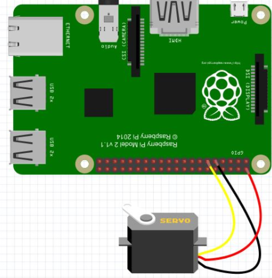

The guide i started to use but changed alot is https://learn.adafruit.com/trainable-robotic-arm/overview i changed it to have 2 buttons per motor.
Things i wish i knew before starting this project, the floating 3.3vs on the pi and the fact the PI is not very good at controling PWM compared to other
boards.
Steps that i did to create the arm
you will need 4-5 mirco analog feedback servos , male to male wires and female to female wires. 8 1k and 8 10k resistor for a pull down and 8 buttons
as well as the 3d printed parts.
1: The 3d printed parts are https://www.thingiverse.com/thing:34829
2: The pi has GPIO pins which 4 of them are pwm which you would set with the signal pins of the servo motor which is the
yellow wire on the mirco servo. https://www.adafruit.com/product/1449 and you will need 4 of these. https://www.element14.com/community/servlet/JiveServlet/previewBody/73950-102-11-339300/pi3_gpio.png
the PWM pins are 12,13,18 and 19 and after those have been assigned VIA code i used python you will than have to find 2 gpio pins for each motor one
to control each button. The button than moves the motor left and right
3: Once the wiring is done here is some of mine it isn't the best. for the buttons i used the 3v volts from the pi aka pin 1 and for the motors the 5v pin which is pin 2.
The ground is pin 6 and i used a breadboard to wire mine up which may not look nice and to stop the floating 3.3 volts you can use either a pull down or up resistor i did the pull down.
before you test the motor make sure you have the correct wires in as the mirco servo ha 4 wires 3 are together and 1 white wire you may ignore this one. The other three must be done as follows
brightest wire is the control or signal wire than the middle is power and the darkest is ground. Once you set that up test each motor and make sure they work.
and and and
5: here is my code on pastebin https://pastebin.com/CRE1zLQZ the pins i used for the motors and pwms are at the top. each are set to postion 7 so when they boot up it will be in a certain postion.
6: Video
7: code https://pastebin.com/nCWX3j4F you do not have to use python, C will work fine and assembly will work the best as you can control things moreso
Week 11 hardware
I burnt out another motor after miswiring it and now i can no longer turn the arm but it will still work just cannot turn but will bend forwards and backwards as the other
motors work.
burnt out 2 motors than had to buy 2 more and burnt out 1 more and also found out the pi has a floating 3.3 volts which will send
signals from the pi to the arm randomly moving it without the button so in order to fix this i added a pull down resistor to each button
to stop the floating 3.3 volts. There also isnt enough PWM pins and GPIO pins for the motors for all 5 motors. so the arm will not be able to turn
left or right.
Week 9 hardware
Progress report: after testing the motors 2 out of the 5 have been burned our and such i will have to buy 2 more which will be 20$ also will have to get more wires and buttons. Another thing is the 3d
printed arm is broken and i have sent a new email requesting new parts. I have code that moves the arm forward and backwards and a stop button. each motor will have 2 buttons that will move it.
Some things have changed since the start of the project of the arm like i would have only used 2 buttons but as i have said before i will be using 2 buttons for each motor so the user can move it more freely.
https://learn.adafruit.com/trainable-robotic-arm/overview i borrowed the arm from here but instead of an arundio board i am using a pi
http://www.toptechboy.com/raspberry-pi/raspberry-pi-lesson-28-controlling-a-servo-on-raspberry-pi-with-python/ a good guide in how to use python with raspberry pi.
a basic way to connect a motor 
Week 9 Hardware
Video showcasing all of my parts.
Week 8 Hardware
i had to fix all the shorts in my pcb
Ready script
my script will showcase the following: the Pi, 3d printed parts, motors, breadboard
Week 7 Hardware
PCB showcase, there was an short in the pcb
ready script and plcard for next week
Week 6 Hardware
came back from 5 week strike
finished PCD
have to finish image for Pi 3 for next week
Test pcb next week
Week 5 Hardware (A - Monday Oct. 16, B - Friday Oct. 13)
So far i have gotten the 5 motors, pcb and the PI 3. I also sent my STL files for the robot arm to the prototype lab to be 3D printed.
Started soldering the PCB
Week 4 Hardware (A - Monday Oct. 2, B - Friday Sept. 29)
Budget Due -> trade it for your previously submitted work (rubric).
Week 3 Hardware (A - Monday Sept. 25, B - Friday Sept. 22)
test, img soon to be here
Week 2 Hardware (A - Monday Sept. 18, B - Friday Sept. 15)
handed in the proposal
Week 1 Hardware (A - Monday Sept. 11, B - Friday Sept. 8)
 and and
and and